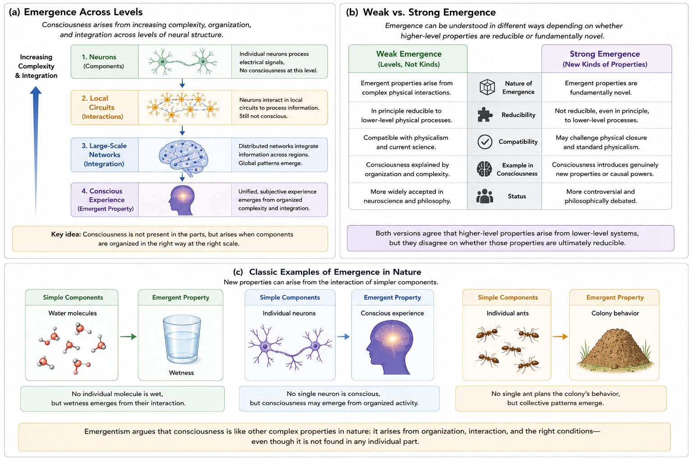

Chapter 7 Emergentism
7.1 Chapter Overview
Emergentism proposes that consciousness arises from organized complexity. According to this family of theories, conscious experience is not present in isolated neurons or simple physical components, but emerges from large-scale patterns of interaction, integration, and organization within complex systems.
Emergentist approaches attempt to bridge the gap between reductionist neuroscience and subjective experience. Rather than treating consciousness as fundamental or entirely separate from physical processes, emergentism argues that consciousness is a higher-level property arising from sufficiently organized biological or informational systems.
This chapter examines the historical roots, conceptual foundations, explanatory mechanisms, empirical relevance, strengths, criticisms, and unresolved problems associated with emergentist theories of consciousness. It also explores the distinction between weak and strong emergence, the role of complexity in neural systems, and the implications of emergence for artificial intelligence and machine consciousness. :contentReferenceoaicite:0
7.2 Learning Objectives
After reading this chapter, the reader should be able to:
- Define the central claims of emergentism.
- Distinguish between weak and strong emergence.
- Explain how emergence differs from reductionism and dualism.
- Describe how emergentist theories relate consciousness to complex systems.
- Evaluate the explanatory strengths and limitations of emergentist approaches.
- Analyze the implications of emergence for neuroscience and artificial intelligence.
7.3 Historical Development
Emergentist ideas developed partly in response to dissatisfaction with both strict reductionism and substance dualism. Early emergentist thinkers argued that nature contains organizational levels whose properties cannot be understood entirely by analyzing their smallest components in isolation.
Philosophers such as Samuel Alexander and C. D. Broad proposed that genuinely novel properties may emerge at higher levels of complexity. Later thinkers including Roger Sperry and John Searle applied related ideas to biological systems and consciousness.
Modern emergentist theories often intersect with:
- systems theory;
- complexity science;
- neuroscience;
- network dynamics;
- information theory;
- embodied cognition;
- artificial intelligence.
Unlike dualism, emergentism does not necessarily claim that consciousness is non-physical. Unlike strict reductionism, however, it argues that consciousness cannot be adequately understood solely by studying isolated neurons or elementary physical components.
7.4 Core Idea of Emergence
Emergent properties are properties that arise from organized interactions among simpler components but are not present in the components individually.
Examples of emergence appear throughout nature:
- wetness emerges from interactions among water molecules;
- life emerges from biochemical organization;
- colony behaviour emerges from interacting ants;
- hurricanes emerge from atmospheric dynamics.
Emergentists argue that consciousness may arise in a comparable way. Individual neurons are not themselves conscious, but sufficiently integrated neural systems may generate unified subjective experience.
Figure 7.1 illustrates the basic emergentist framework. Consciousness is represented as arising progressively from increasing organization, integration, and large-scale interaction across neural systems.

Figure 7.1: Emergentist theories propose that consciousness arises from increasing levels of neural organization, interaction, and integration. Conscious experience is treated as an emergent property of complex systems rather than a property of isolated components.
As shown in Figure 7.1, emergentist theories emphasize that consciousness is not localized to a single neuron or isolated mechanism. Instead, conscious experience is interpreted as a higher-level phenomenon arising from coordinated large-scale activity.
7.5 Weak and Strong Emergence
A major distinction within emergentist theories concerns the nature of emergence itself.
7.5.1 Weak Emergence
Weak emergence proposes that consciousness arises from complex physical interactions but remains fully grounded in lower-level physical processes. Conscious states are emergent in the sense that they appear only at higher levels of organization, even though they remain theoretically explainable through underlying mechanisms.
Weak emergence is generally compatible with mainstream neuroscience and physicalism.
7.5.2 Strong Emergence
Strong emergence argues that consciousness possesses genuinely novel properties that cannot be completely reduced to lower-level physical explanations, even in principle. According to this view, subjective experience introduces fundamentally new features into reality.
Strong emergence is more philosophically controversial because critics argue that it may conflict with physical closure and standard scientific explanation.
7.6 Consciousness and Complex Systems
Emergentist theories frequently emphasize:
- distributed processing;
- large-scale neural integration;
- dynamic interactions;
- synchronization;
- recurrent connectivity;
- network complexity.
From this perspective, consciousness is not a static object but a dynamic process emerging from coordinated activity across multiple interacting systems.
Emergentist approaches therefore often align naturally with:
- global integration models;
- network neuroscience;
- dynamical systems theory;
- embodied cognition;
- complexity theory.
Rather than searching for a single “consciousness neuron,” emergentists argue that consciousness depends on system-wide organization.
7.7 Relation to Other Theories
Emergentism overlaps with several other approaches discussed in this book, but it remains conceptually distinct.
- Like physicalism, emergentism treats consciousness as dependent on physical systems.
- Like functionalism, it emphasizes organization and interaction.
- Like information-based theories, it values integration and complexity.
- Unlike dualism, it usually rejects a separate non-physical substance.
- Unlike strict reductionism, it argues that higher-level properties may possess explanatory importance.
Emergentism can therefore function as a bridge between neuroscience, philosophy, systems theory, and cognitive science.
7.8 Downward Causation
Some emergentist theories propose that higher-level conscious states may exert causal influence on lower-level neural activity. This idea is sometimes called downward causation.
For example, global mental states such as intentions, emotions, or conscious decisions may shape lower-level neural processing and behaviour.
Critics argue that downward causation risks conflicting with physical closure, while supporters argue that higher-level organizational states can possess genuine explanatory and causal significance even within physical systems.
7.9 Empirical Relevance
Evidence relevant to emergentist theories includes:
- large-scale brain integration;
- neural synchrony;
- recurrent cortical activity;
- global broadcasting;
- complexity measures;
- network connectivity;
- anesthesia research;
- disorders of consciousness;
- split-brain studies;
- altered states of consciousness.
Modern neuroscience increasingly studies consciousness using network-level approaches rather than isolated localization alone, which has strengthened interest in emergentist frameworks.
7.10 Strengths of Emergentism
Major strengths include:
- It connects consciousness to broader principles of complex systems.
- It avoids strict reductionism without requiring substance dualism.
- It aligns naturally with contemporary neuroscience and network theory.
- It explains why isolated neural components may fail to generate consciousness individually.
- It provides a flexible framework for studying biological and artificial systems.
Emergentism is also attractive because emergence is already widely recognized throughout physics, biology, chemistry, and systems science.
7.11 Weaknesses and Criticisms
Despite its strengths, emergentism faces several important criticisms.
7.11.1 Explanatory Vagueness
Critics argue that saying consciousness “emerges” may simply rename the phenomenon rather than explain it. The theory must still explain how and why subjective experience arises.
7.11.2 Lack of Precise Thresholds
Emergentist theories often struggle to identify exactly when consciousness appears as complexity increases.
7.11.3 The Hard Problem
Even if emergence explains how complex cognition arises, critics argue that it may still fail to explain why experience has qualitative or first-person character.
7.12 Implications for Artificial Intelligence
Emergentism has important implications for machine consciousness.
If consciousness depends primarily on sufficiently complex organization and integration, then advanced artificial systems may eventually develop forms of consciousness under the right conditions.
However, emergentists disagree regarding what kinds of systems qualify:
- purely computational systems;
- biologically inspired neural systems;
- embodied agents;
- self-modeling architectures;
- globally integrated networks.
Some emergentists argue that current AI systems remain non-conscious because they lack embodiment, biological dynamics, unified selfhood, or genuine phenomenology.
7.13 Explanatory Scope
Emergentism attempts to explain:
- unified experience;
- large-scale integration;
- neural coordination;
- conscious access;
- self-organization;
- system-level dynamics.
However, important unresolved questions remain:
- Why should complexity generate experience at all?
- What exact level of organization is sufficient for consciousness?
- Can emergence be measured quantitatively?
- Does emergence explain phenomenal consciousness or only functional organization?
- Could non-biological systems become genuinely conscious?
7.14 Summary
Emergentism proposes that consciousness arises from organized complexity rather than from isolated components alone. Conscious experience is interpreted as a higher-level property emerging from large-scale interaction, integration, and dynamic organization within complex systems.
Emergentist theories occupy an important middle position between strict reductionism and dualism. They preserve the dependence of consciousness on physical systems while recognizing that higher-level organization may possess explanatory significance beyond the properties of individual components.
Although emergentism remains conceptually and empirically incomplete, it provides one of the most influential frameworks for connecting consciousness research with neuroscience, complexity science, systems theory, and artificial intelligence.